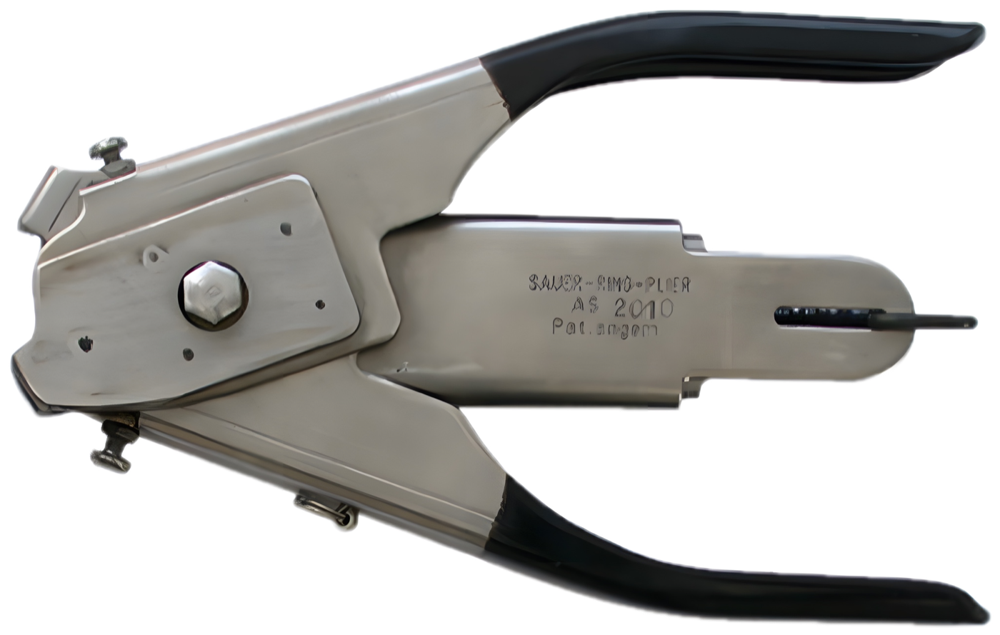
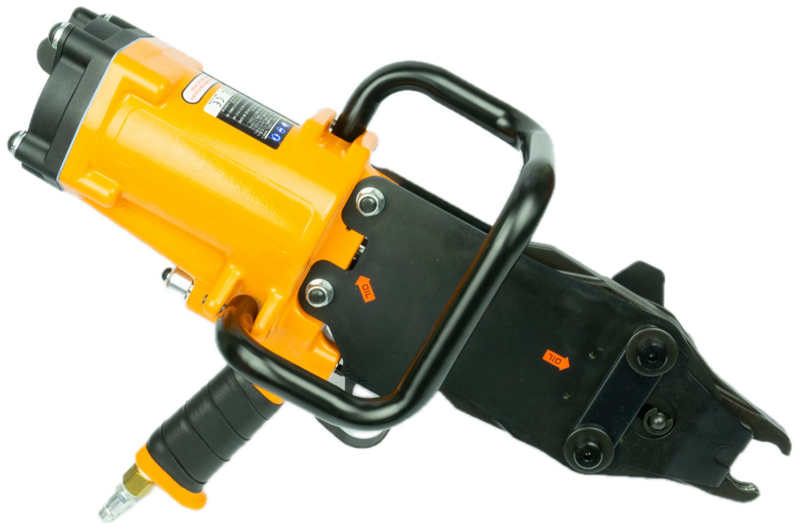
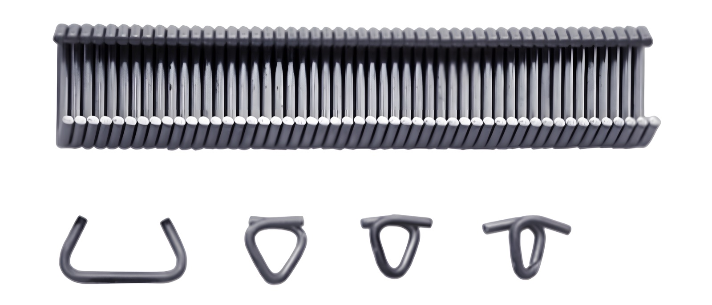
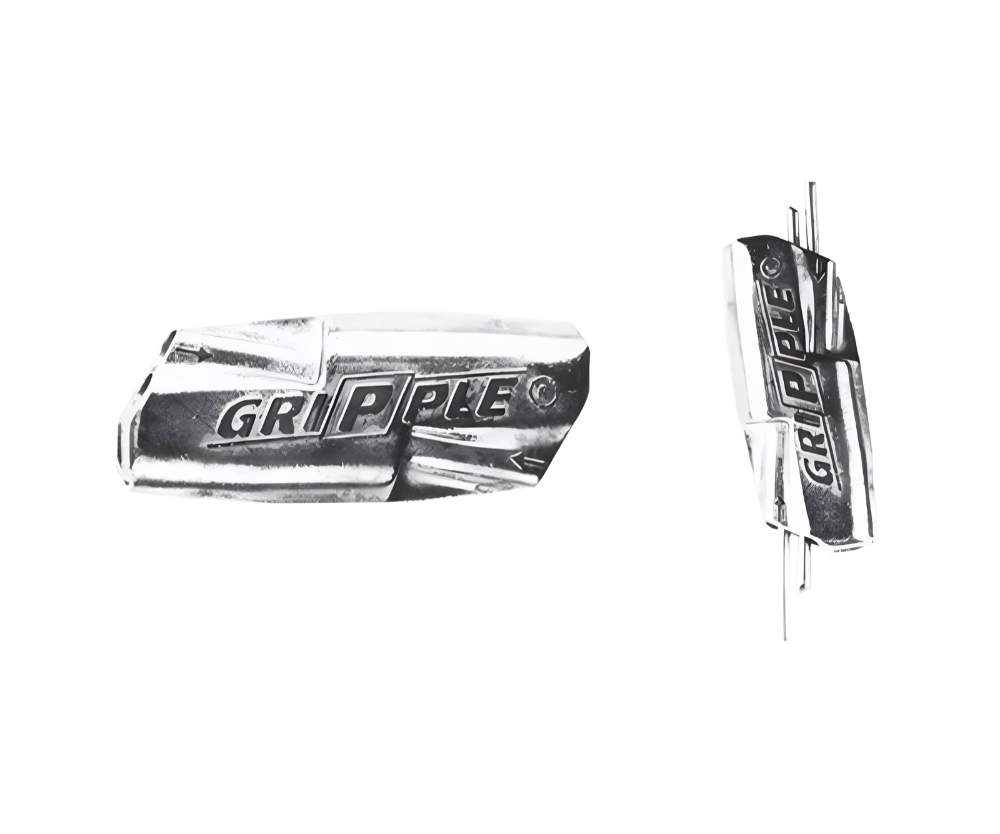

Spezialist für Ringzangen
im Zaunbau
Ringzangen für den Zaunbau – von Praktikern entwickelt und bis heute in eigener Hand.
Wir entwickeln, fertigen und betreuen robuste Ringzangen, Ringmagazine und Drahtwerkzeuge – für den gewerblichen Zaunbau, die drahtverarbeitende Industrie, den Garten- und Landschaftsbau und den Gabionenbau.

Wir kommen selbst aus der Branche.
Als Praktiker aus der Branche haben wir zunächst die AS 2000 entwickelt. Wir wollten eine robuste Ringzange, einfach zu bedienen, die uns zuverlässig bei der Arbeit unterstützt.
Im Laufe der Jahre haben wir unser Werkzeugsortiment nach und nach für die unterschiedlichsten Anwendungen erweitert. Heute kommen unsere Ringzangen tagtäglich zum Einsatz.
Unser Ziel ist es, für Ihre spezielle Tätigkeit das optimale Werkzeug zu liefern. Wir beraten Sie gern bei der Auswahl und stellen Ihnen gegebenenfalls unser Werkzeug für einen begrenzten Zeitraum kostenlos zum Testen zur Verfügung.
Ringzangen, Ringe und Zubehör
Ringzangen
Zehn Modelle – vom Einsteigermodell für Einzelringe über Zangen mit Magazin bis zur pneumatischen und akkubetriebenen Ringzange für große Ringmengen.
AS 200 · AS 200M20 · AS 300 · AS 900 · AS 900M · AS 2000 · AS 6000 · AS 8000 · AS 8000 Akku · AS 9000
Alle Ringzangen ansehen
Ringe & Magazine
Ringmagazine mit je 50 Ringen – aus Zink-Aluminium, verzinkt, mit Kunststoff ummantelt, aus Aluminium oder Edelstahl – sowie Gabionenringe. In allen Ringsorten kurzfristig ab Lager lieferbar.
Ringmagazin 1 · Ringmagazin 2 · Ringmagazin 3 · Gabionenringe 9ZA, 9B, CL 28, CL 36
Ringsorten vergleichen
Sonstiges
Praktische Helfer rund um den Draht: der Gripple zum Verbinden und Spannen, Uni-Driller und Driller zum Drillen, Bündeln und Rödeln.
Gripple · Uni-Driller · Driller
Zubehör ansehen
„Auf uns können Sie sich verlassen.“
Auf alle von uns hergestellten Werkzeuge gewähren wir zwei Jahre Garantie. Von der Entwicklung über die Produktion bis zum Kundenservice liegt alles in unserer Hand. Der Vorteil für Sie ist die problemlose Beschaffung von Ersatzteilen, sollten diese Jahre später einmal nötig sein. Die Ringmagazine sind in allen angegebenen Ringsorten und Materialqualitäten kurzfristig aus unserem Lager lieferbar.
- Garantie
- 2 Jahre auf eigene Werkzeuge
- Ersatzteile
- auch nach Jahren
- Ringmagazine
- kurzfristig ab Lager
- Testen
- kostenlos, auf Anfrage
Sprechen Sie uns an.
Wir beraten Sie gern bei der Auswahl – am Telefon, per E-Mail oder über das Kontaktformular.
Marktstraße 118
60388 Frankfurt am Main